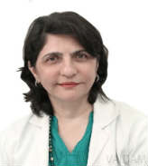

Dr. Firuza Parikh
QUALIFICATIONS
Director , MD, Diplomate, 28 years of experience
ABOUT DOCTOR
Dr. Firuza Parikh is a gynecologist with 28+ years of experience.
She has bagged many awards, including All India Ratna Shiromani Award, Outstanding Young Indian Award, M.D. Adatia Oration Award, Woman of the Year Award, Zee Astitva Award, Hindustan Times Woman of the Year Award, Selected as Woman of the Year 2014 by Limca Book of Records, ranked in list of top 10 Doctors of India by Indian Express and 100 most Powerful Women of Asia Award.
She completed her MD then DGO, DFP, FCPS and Diplomat of the National Board.
She has expertise in IMSI, ICSI, Male infertility, genetics, pre-implantation genetics, Ovarian Cysts, Endometriosis, Uterine Fibroids or Myomas, Pelvic Organ Prolapse, Urinary Problems, Subfertility, Vaginal Discharge, Gynaecological Cancers, Menopause and Vulva Conditions.
Dr. Parikh was visiting Professor in Gynecology and Obstetrics at the Yale University School of Medicine, New Haven, USA 1992-2005.
She is member of American Fertility Society, Bombay Obstetrics and Gynaecology Society, Federation of Obstetrics and Gynaecological Societies of India, Indian Association of Fertility and Sterility, Indian Academy of Juvenile and Adolescent Gynaecology and Obstetrics, Association of Medical Women in India, Indian Association of Gynecological Endoscopists, Indian Society of Human Genetics, et al.
SPECIALIZATION :
Assisted Reproductive Technology,
Obstetrics and Gynecology,
Abdominal and Vaginal Hysterectomy,
Myomectomy,
Repair of genital fistulae.
AWARDS
1. 1995, All India Ratna Shiromani Award for work in the field of Obstetrics and Gynaecology
2. 1995, Outstanding Young Indian Award given by the Indian Junior Chamber
3. 2001, Listed by the National Institutes of Health Registry (USA)
4. 2001, Felicitation by Organization of Pharmaceutical Producers of India
5. 2001, M.D. Adatia Oration
6. 2002, Kuvadia-Shah-Vora Oration Award by The Bombay Medical Association
7. 2006, Woman of the Year Award
8. 2006, Zee Astitva Award for Science and Technology
9. 2007, Hindustan Times Woman of the Year Award
10. 2009, F ICCI FLO Women Achievers Awards 2009 "Excellence in the field of Medicine”
11. 2012, Women in the Driving Seat Award by Lavasa Women’s Drive for Science and Medicine
12. 2012, L'Oreal Paris Femina Women Awards 2012 for Science and Innovation
13. 2014, Selected as Woman of the Year 2014 by Limca Book of Records
14. 2014, listed in the top 10 Doctors of India by Indian Express
15. 2015, 100 most Powerful Women of Asia Award
WORK EXPERIENCE
,
Director, Jaslok Hospital, Mumbai
List Of Treatments
Fibroid Removal Myomectomy,
Sacrocolpopexy,
Adhesion Surgery,
Diagnostic Laparoscopy,
Hysteroscopy,
Endometrial Ablation,
Polypectomy,
Myomectomy,
Diagnostic hysterectomy,
Hysterectomy,
Anterior Posterior Repair Colporrhaphy,
repair Posterior repair,
Bladder Slings (TOT and TVT slings),
Colporrhaphy,
LEEP - Loop Electrosurgical Excision Procedure,
IUD Insertion - Intrauterine Device Insertion,
Cervical polyp removal,
Male Factor Infertility,
Preimplantation Genetic Diagnosis - PGD,
PGD,
Intracytoplasmic Sperm Injection,
ICSI,
Donor...show all.